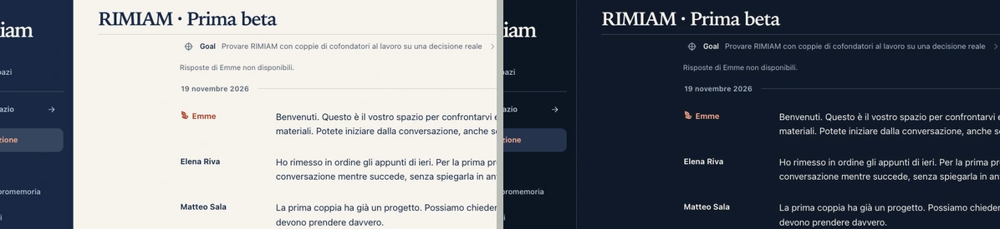

La personalità si ferma al titolo
Nel tema chiaro il titolo con le grazie, il fondo carta e la fascia blu ricordano un’impaginazione editoriale. In scuro il fondo diventa blu e l’accento pesca segnala sia Emme sia azioni come «Invita». Leggendo i messaggi, quasi tutta la personalità del titolo scompare. I due temi condividono questo limite.
Cosa proverei. Ripartirei dalla tipografia dello scambio più frequente: due persone scrivono ed Emme cita una di loro. Disegnerei su quelle quattro righe una voce leggibile anche dopo dieci minuti e solo dopo sceglierei coppia di caratteri, colori e tema scuro. La relazione tra una frase e la sua fonte deve conservarsi anche senza colore.
Da verificare con una persona. Nei due futuri studi mostrerei lo stesso dialogo, senza logo in evidenza: che impressione lascia dopo la lettura?